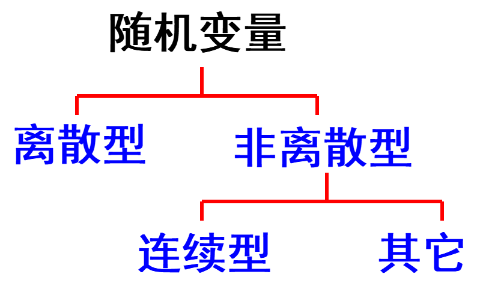
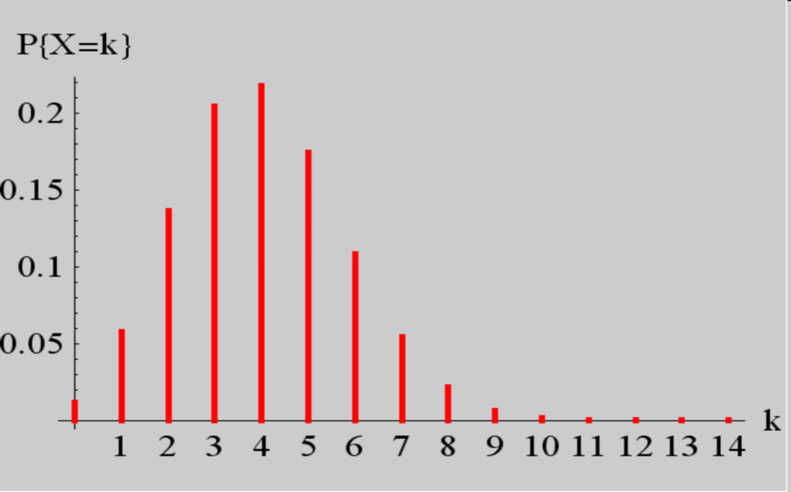
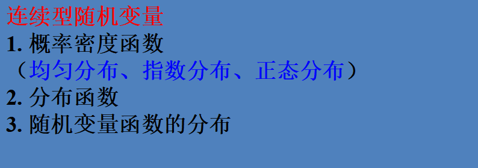

1 随机变量
1.1 随机变量概念的产生
在实际问题中，随机试验的结果可以用数量来表示，由此就产生了随机变量的概念。
- 有些试验结果本身与数值有关（本身就是一个数）.
- 在有些试验中，试验结果看来与数值无关，但我们可以引进一个变量来表示它的各种结果. 也就是说，把试验结果数值化.
这种对应关系在数学上理解为定义了一种实值单值函数.
1.2 随机变量的定义
说明：实值单值函数随试验结果的不同而取不同的值，因而在试验之前只知道它可能取值的范围，而不能预先肯定它将取哪个值。
随机变量通常用大写字母X, Y, Z, W, N 等表示；随机变量所取的值,一般采用小写字母 x, y, z, w, n等。
1.2.1 引入随机变量的意义
有了随机变量，随机试验中的各种事件，就可以通过随机变量的关系式表达出来.
如：每小时查看手机的次数，用X表示，它是一个随机变量.
由于试验结果的出现具有一定的概率，随机变量的取值也有一定的概率。
随机变量概念的产生是概率论发展史上的重大事件。引入随机变量后，对随机现象统计规律的研究，就由对事件及事件概率的研究扩大为对随机变量及其取值规律的研究。
1.3 随机变量的分类

- 离散型：随机变量所取的可能值是有限多个或无限可列个, 叫做离散型随机变量.
- 连续型：随机变量所取的可能值可以连续地充满某个区间, 叫做连续型随机变量.
2 离散型随机变量及其分布律
2.1 离散型随机变量分布律的定义
定义1：若随机变量X的所有可能取值是有限多个或可列无限多个，这种随机变量称为离散型随机变量。
定义2：设 xk(k=1,2,…) 是离散型随机变量 X 所取的一切可能值，称
PX=xk=pk,k=1,2,⋯
为离散型随机变量 X 的分布律。
2.2 离散型随机变量分布律表示方法
2.2.1 公式法
PX=xk=pk,k=1,2,⋯
2.2.2 列表法
例1 ：一辆汽车开往目的地需要经过四组信号灯，每组信号灯以p的概率允许或禁止汽车通过。以X表示汽车首次停下时已经过的信号灯的组数（各信号灯之间相互独立），求X的分布律。
解：设p为每组信号灯禁止汽车通过的概率，X的分布律为：

P{X=k}=(1−p)kp,k=0,1,2,3
2.3 几种常见分布
2.3.1 两点分布
设随机变量 X 只可能取0与1两个值 , 它的分布律为：
P{X=k}=pk(1−p)1−k,k=0,1
| X |
0 |
1 |
| pk |
1−p |
p |
则称 X 服从$ (0—1)$ 分布或两点分布。
例2：200件产品中, 有190件合格品, 10件不合格品, 现从中随机抽取一件, 那么，若规定X=1, 取得不合格品, 0, 取得合格品. ，则随机变量 X 服从(0 -1)分布。
| X |
0 |
1 |
| pk |
200190 |
20010 |
2.3.2 等可能分布
如果随机变量 X 的分布律为：
| X |
a1 |
a2 |
··· |
an |
| pk |
n1 |
n1 |
n1 |
n1 |
其中(ai=aj),(i=j),则称X服从等可能分布.
2.3.3 伯努利试验和二项分布
一般地，设在一次试验E中我们只考虑两个互逆的结果：A 或 Aˉ .
- 掷骰子：“掷出4点”，“未掷出4点”
- 抽验产品：“是正品”，“是次品”
这样的试验E称为伯努利试验。
将伯努利试验E独立地重复地进行n次,则称这一串重复的独立试验为n重伯努利试验 .
- 重复是指这 n 次试验中$P(A)= p $保持不变.
- 独立是指各次试验的结果互不影响 .
因此A在n次试验中发生k次的概率为：
Cnkpk(1−p)n−k 记 q=1−pCnkpkqn−k
得X的分布律为：
P{X=k}=Cnkpk(1−p)n−kk=0,1,⋯,n
称这样的分布为二项分布，记为X∼b(n,p)。
例题
分析
图示概率分布

2.3.4 泊松分布
设随机变量所有可能的取值为0,1,2,…, 而取各个值的概率为：
P{X=k}=k!λke−λ,k=0,1,2,⋯
其中λ>0是常数，则称 X 服从参数为λ的泊松分布，记为X∼π(λ)。
泊松分布的图形
k=0∑∞P(X=k)=k=0∑∞k!λke−λ=e−λk=0∑∞k!λk=e−λeλ=1
2.3.5 二项分布与泊松分布的关系
历史上，泊松分布是作为二项分布的近似，于1837年由法国数学家泊松引入的 .
Poisson定理说明若X∼b(n,p), 则当n 较大，p 较小, 而np=λ适中, 则可以用近似公式：
Cnkpk(1−p)n−k≈e−λk!λk,k=0,1,2,⋯
3 随机变量的分布函数
3.1 分布函数的定义
设 X 是一个 随机变量，x为任意实数，函数F(x)=PX≤x,−∞<x<∞，称为 X 的分布函数。
如果将 X 看作数轴上随机点的坐标，那么分布函数 F(x) 的值就表示 X 落在区间(−∞,x]内的概率。
注意：
- 在分布函数的定义中, X是随机变量, x是参变量.
- F(x) 是随机变量 X 取值不大于 x 的概率.
- 对任意实数 x1≤x2，随机点落在区间(x1,x2]内的概率为：
\begin{array}{l}P\\{x_{1}<X \leq x_{2}\\}=P\\{X \leq x_{2}\\}-P\\{X \leq x_{1}\\}=F(x_{2})-F(x_{1})\end{array}
3.1.1 分布函数的性质
如果一个函数具有上述性质，则一定是某个随机变量X 的分布函数. 也就是说，性质(1)–(3)是鉴别一个函数是否是某随机变量的分布函数的充分必要条件.
4 连续型随机变量及其概率密度
4.1 连续型随机变量及其概率密度的定义
对于随机变量$ X$ , 如果存在非负可积函数 f(x)，x∈(−∞,+∞)，使得对任意实数x，有：
F(x)=∫−∞xf(t)dt
则称 X为连续型随机变量, 称 f(x)为 X 的概率密度函数，简称为概率密度。连续型随机变量的分布函数在 R 上连续。
4.2 概率密度的性质
- f(x)≥0
- ∫−∞+∞f(x)dx=1
这两条性质是判定一个函数 f(x)是否为某分布的概率密度的充要条件。
- 对于任意实数 x1,x2,(x1<x2),P{x1<X≤x2}=∫x1x2f(x)dx
利用概率密度可确定随机点落在某个范围内的概率。
- 若 f(x) 在点 x 处连续 , 则有F′(x)=f(x)。
对 f(x)的进一步理解，若 x 是 $ f(x)$ 的连续点，则：
f(x)=Δx→0+limΔxF(x+Δx)−F(x)=Δx→0+limΔxP{x<X≤x+Δx}
故X的密度 f(x) 在 x 这一点的值，恰好是X 落在区间(x,x+Δx]上的概率与区间长度Δx之比的极限. 这里，如果把概率理解为质量，f(x)相当于线密度。
若不计高阶无穷小，有P{x<X≤x+Δx}=f(x)Δx，表示随机变量 X 取值于(x,x+Δx]的概率近似等于f(x)Δx。
4.2.1 注意
连续型随机变量取任一指定实数值 a 的概率均为0. 即PX=a=0。这是因为连续型随机变量的分布函数 F(x) 是连续的，且
\begin{aligned} 0 \leq P\\{X=a\\} & \leq P\\{a-\Delta x<X \leq a\\} = F(a)-F(a-\Delta x)\end{aligned}
对连续型随机变量X , 有
P{a≤X≤b}=P{a<X≤b}=P{a≤X<b}=P{a<X<b}
4.3 常见的连续型随机变量
4.3.1 均匀分布
若随机变量X的概率密度为：
则称X在区间(a,b)上服从均匀分布，记作X∼U(a,b)。
4.3.2 指数分布
若随机变量X具有概率密度
f(x)={θ1e−θx,0,x>0其它
其中θ>0为常数，则称X 服从参数为 θ 的指数分布。指数分布常用于可靠性统计研究中，如元件的寿命。
若X服从参数为 θ 的指数分布, 则其分布函数为：
F(x)=P{X≤x}={1−e−x/θ,0,x>0其它
例3 设某类日光灯管的使用寿命 X 服从参数为θ=2000的指数分布(单位:小时).
(1) 任取一只这种灯管, 求能正常使用1000小时以上的概率.
(2) 有一只这种灯管已经正常使用了1000 小时以上,求还能使用1000小时以上的概率.
指数分布的重要性质 :“无记忆性”.
4.3.3 正态分布
若连续型随机变量$ X $的概率密度为：
f(x)=2πσ1e−2σ2(x−μ)2,−∞<x<∞
其中μ和σ(σ>0)都是常数, 则称X服从参数为(μ,σ)的正态分布或高斯分布，记作X∼N(μ,σ2)。
4.3.3.1 f(x)具有下述性质
- f(x)≥0
- ∫−∞∞f(x)dx=1
- 函数f(x)在(−∞,μ]上单调增加，在[μ,∞)上单调减少，在x=μ取得最大值
f(μ)=2πσ1
函数图像如下：
正态分布N(μ,σ2)的图形特点：
μ决定了图形的中心位置，σ决定了图形中峰的陡峭程度。
4.3.3.2 分布函数
μ=0，σ=1的正态分布称为标准正态分布，其密度函数和分布函数常用ϕ(x)和Φ(x)表示：
ϕ(x)=2π1e−2x2,−∞<x<∞
Φ(x)=2π1∫−∞xe−2t2 dt,−∞<x<∞
定理1：若X∼N(μ,σ2),则Z=σX−μ∼N(0,1)
标准正态分布的重要性在于，任何一个一般的正态分布都可以通过线性变换转化为标准正态分布。
分布函数的性质：
（1）Φ(0)=21
（2）∀x∈R,Φ(−x)=1−Φ(x)
（3）“3σ”准则：由标准正态分布的查表计算可以求得，当X～N(0,1)时：
P{∣X∣≤1}=2Φ(1)−1=0.6826P{∣X∣≤2}=2Φ(2)−1=0.9544P{∣X∣≤3}=2Φ(3)−1=0.9974
这说明，X的取值几乎全部集中在[−3,3]区间内，超出这个范围的可能性仅占不到0.3%。
将上述结论推广到一般的正态分布, X∼N(μ,σ2)时,Y=σX−μ∼N(0,1)，有以下规律：
P(μ−σ≤X≤μ+σ)=0.6826P(μ−2σ≤X≤μ+2σ)=0.9544P(μ−3σ≤X≤μ+3σ)=0.9974
可以认为，X的取值几乎全部集中在[μ−3σ,μ+3σ]区间内，这在统计学上称为“3σ准则”。
（4）标准正态分布的上α分位点：设X∼N(0,1)，若数za满足条件
PX>zα=α,0<α<1⟹PX<−zα=α
则称点 zα 为标准正态分布的上$ {\alpha}$ 分位点.
例5 公共汽车车门的高度是按男子与车门顶头碰头机会在 0.01 以下来设计的.设男子身高X～N(170,6²),问车门高度应如何确定?
5 随机变量的函数的分布
5.1 离散型随机变量函数的分布
一般地，若X是离散型随机变量 ，X 的分布律为X∼(x1p1x2p2⋯⋯xnpn)，则Y=g(X)∼(g(x1)p1g(x2)p2⋯⋯g(xn)pn)，之后合并相同项。
5.2 连续型随机变量函数的分布
例3设X具有概率密度fX(x),求Y=X2的概率密度.
从上述例子中可以看到，在求P(Y≤y) 的过程中，关键的一步是设法从{ g(X) ≤ y }中解出X, 从而得到与 {g(X) ≤ y }等价的X 的不等式。这是求随机变量的函数的分布的一种常用方法.（称为分布函数法）
下面给出一个定理，在满足定理条件时可直接用它求出随机变量函数的概率密度 .
6 总结


 微信
微信 支付宝
支付宝